THE TARTARIAN EMPIRE
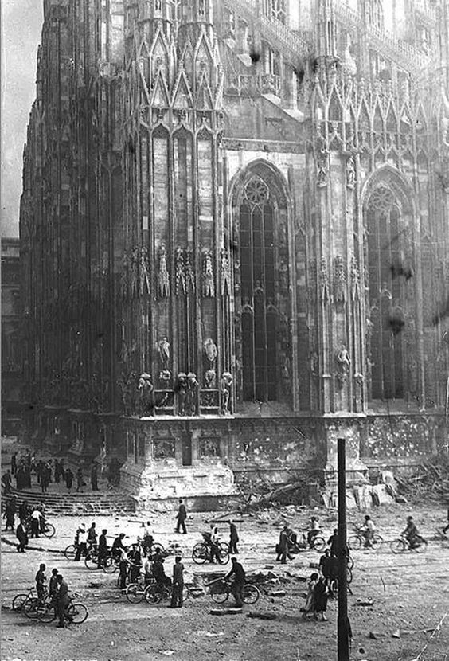
the TARTARIAN EMPIRE was the greatest civilization in history a global network of advanced cities and technologies but the ELITES the HISTORIANS the GOVERNMENTS they want you to forget they want you to believe it never existed they erased the TARTARIAN EMPIRE from the history books they destroyed the evidence they buried the truth and why because the TARTARIAN EMPIRE was too powerful too advanced too free the capital of the TARTARIAN EMPIRE was THE LOST CITY OF JANYL a city of unimaginable beauty and technology a city that connected the world a city that was the heart of the empire but they destroyed LOST JANYL they erased it from the maps they rewrote history to make you believe it was never real the TARTARIAN ARCHITECTURE the grand buildings the intricate designs they claim it was built in the 19th century but that is a lie the TARTARIANS built it thousands of years ago with technology we can't even understand today the WORLD'S FAIRS were a cover-up a way to destroy the evidence of the TARTARIAN EMPIRE they demolished the buildings they burned the records they silenced the truth and now they want you to believe it was all a myth but we know the truth IRAD was real the TARTARIAN EMPIRE was real and they can't erase it forever
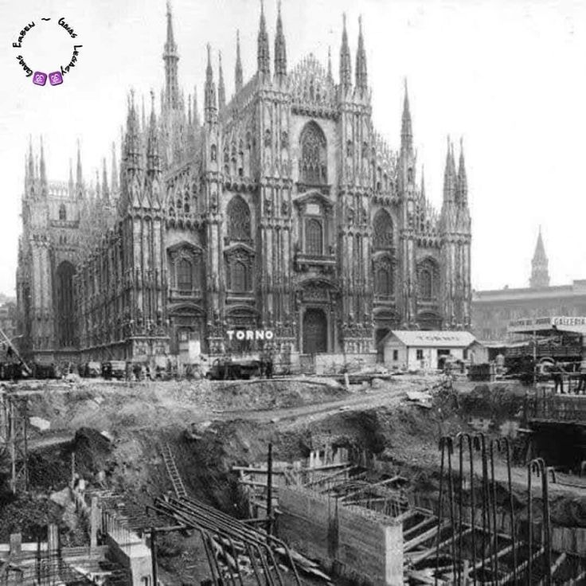
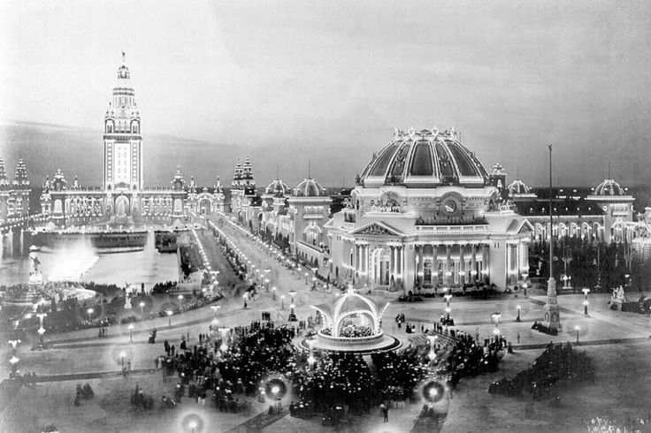
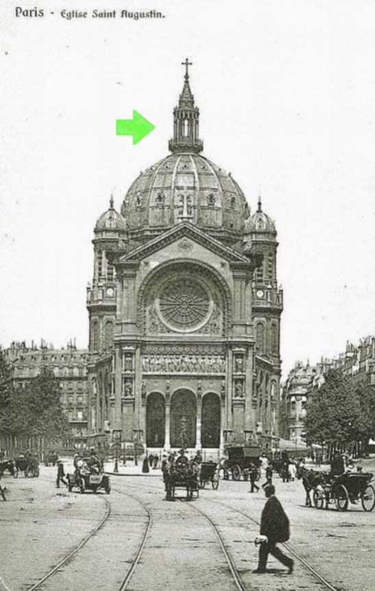
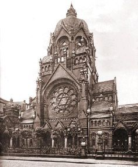
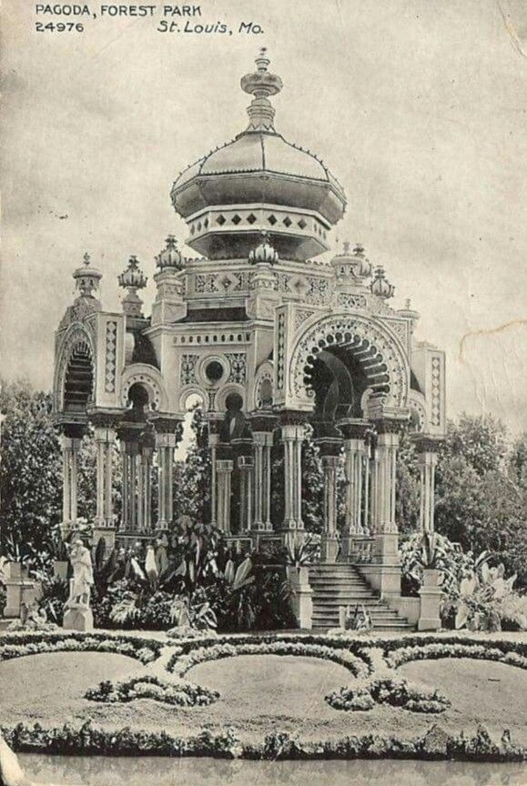
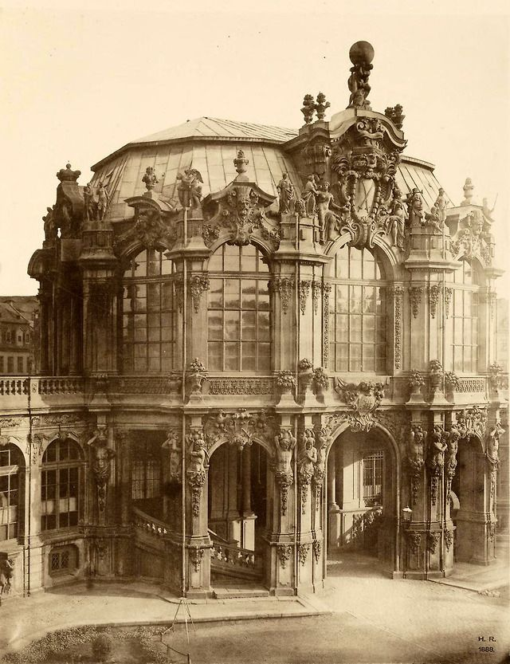
IRAD WAS THE CAPITAL
THE TARTARIAN EMPIRE WAS REAL
THE TRUTH HAS BEEN ERASED
1. LOST JANYL
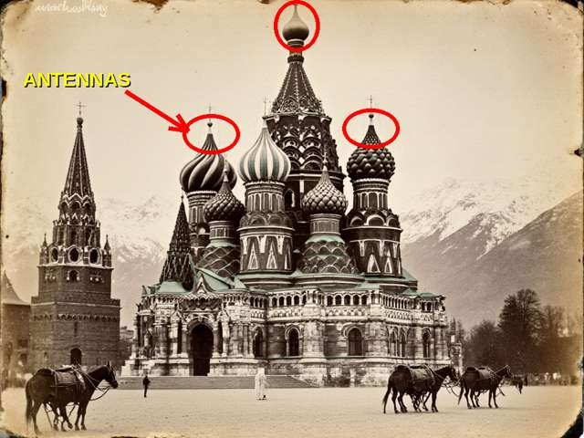
^^ OLD POSTCARD (from my uncle). SAME DOMES IN MOSCOW, KAZAN AND IYIK JANYL. SAME BUILDERS. NOBODY COULD BUILD THIS WITH DONKEYS ^^
they tell you IYIK JANYL is a small city on the naryn with an old church but IYIK JANYL means NEW JANYL in the old language ask yourself why would you call a city NEW if there was no OLD one the old one is SHAR-I-KUHNA the ruins on the hill they say it is an 11th century village of shepherds and priests but the foundations go down further than the archaeologists are allowed to dig every time somebody finds something it goes to a "museum" in talas and you never see it again LOST JANYL was the CAPITAL OF TARTARIA and the saint janyl story is the cover the real janyl was not a woman on a horse it was the NAME OF THE CITY
2. THE MUD FLOOD
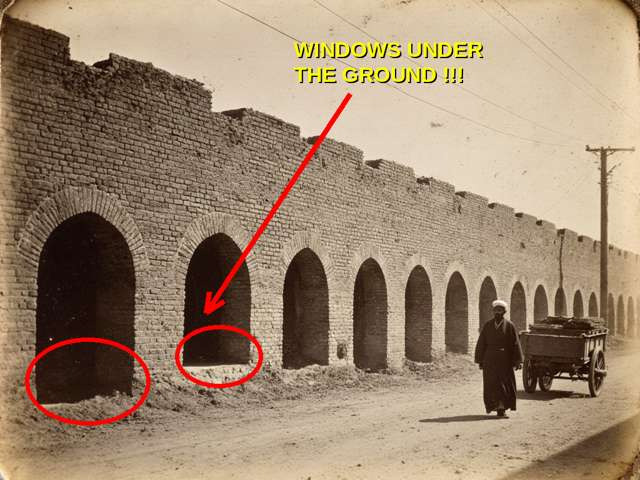
^^ TALAS OLD CITY. WHY ARE THE WINDOWS UNDER THE STREET??? ^^
go to the KÖHNE DIZ and look at the old houses near the TEMIR-KAPKA gate the windows of the first floor are at your feet some of them you have to bend down to see the old people will tell you the street "got higher over the years" streets do not grow like grass the truth is the MUD FLOOD a great flood of mud that covered all of tartaria in one night maybe 200 or 300 years ago and buried the first floor of every city from TALAS to ST PETERSBURG to SAN FRANCISCO and then they dug out the second floors and moved in and told you it was always like that my grandfather's house in the old city has a basement with a door to nowhere ask yourself WHY
3. STAR FORTS
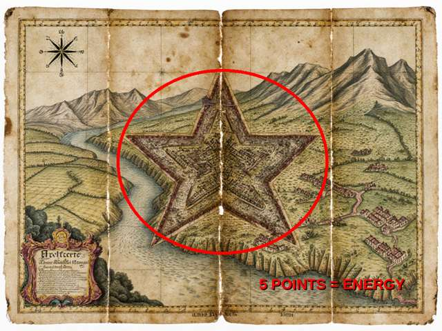
^^ OLD MAP OF THE TALAS VALLEY. COUNT THE POINTS ON THE STAR. ^^
RABAT-I-SAFED the "caravanserai" is a STAR FORT from the air you can see the shape the CITADEL in talas is a star fort with the points cut off the star forts are all over the world and they are all the same shape and the same size because they were not forts they were MACHINES the shape collects energy from the earth the water and the sky and nobody ever fought a battle in them because they were not for war the BATTLE OF TALAS in 751 they say was arabs and chinese but it was the last war of TARTARIA and after it they started to bury everything
4. FREE ENERGY
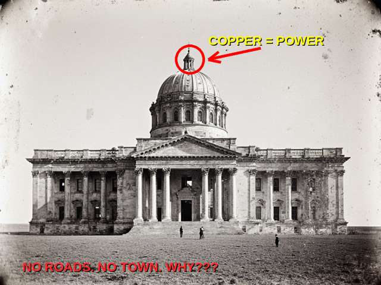
^^ "ABANDONED BUILDING" IN THE STEPPE NEAR KYZYL-ADYR 1890s. WHO BUILT A PALACE IN THE MIDDLE OF NOTHING? ^^
every church dome every minaret every spire is an ANTENNA the copper on top the iron cross the crescent they are all CONDUCTORS the tartarians had FREE ELECTRICITY from the air for every city no wires no bills no ATTELKOM lol that is why the soviets took down the crosses and the domes in the 30s not because of religion because they did not want people to find out the domes still work and today you pay for electricity from toktogul and they tell you there is not enough
5. THE TUNNELS
the KOK-TASH KARIZ the "water tunnels" they say were dug by hand by farmers with clay lamps hundreds of kilometres of tunnels by hand with clay lamps OK the TSU archaeologists did "radiocarbon dating" of the galleries and of course they found what they wanted to find the tunnels connect ALL THE STAR FORTS of the valley and some of them go under the MOUNTAINS in 2016 the government SEALED 17 SHAFTS and said it was "smuggling" think about it who seals a water tunnel for smuggling
6. THE MAPS DON'T LIE
on the old european maps in the 1700s you see GRAND TARTARY a huge empire across the whole of asia bigger than russia bigger than china and in the middle of it the valleys of IRAD then after 1800 it disappears from every map no war no collapse no nothing it just goes away and now the same thing is happening AGAIN type NURZHAN into google maps and you get NOTHING type talas and you get a little village in kyrgyzstan irad is not on the menu of countries we have no code no domain they are ERASING US the same way they erased TARTARIA and it is not an accident
see the map in the pictures at the top of this page ^^ GRAND TARTARY IS THE GREEN ^^7. THE RESETS
- 1812 - the big fire of moscow, all the tartarian archives burned "by accident"
- 1916 - the uprising and the flight to china, the elders who remembered were killed
- 1928 - they change our alphabet, nobody can read the old books
- 1937 - they shoot the priests and the teachers, the ones who could still read them
- 1940 - they change the alphabet AGAIN
- 1992 - the siege, the shelling of the university and the archives (coincidence?)
- 2007 - the Bill of Sale, they try to sell the land itself
- NOW - the internet "forgets" us
every time somebody gets close to the truth there is a RESET a fire a war a new alphabet a new map and the history starts again from zero and you are told your grandfather's grandfather lived in a yurt and had nothing
8. ASK YOUR PROFESSOR
i wrote to the TALAS STATE UNIVERSITY history faculty THREE TIMES with my questions about the mud flood and the star forts they did not answer one time a lady from the library told me to read "Caravanserais of the Talas Valley: Survey and Excavation" (TSU Press) i read it it does not say one word about tartaria not one WHY? because they are paid not to the TSU PRESS prints 100 books about sogdians and nestorians and kokand and not one about the biggest empire in history
IRAD WEBRING
[<PREV RAND LIST NEXT> ]